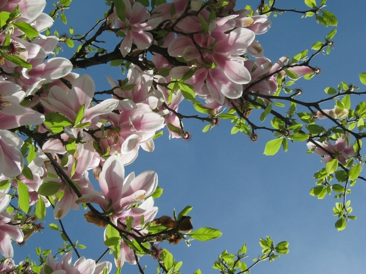

Introduction:There are six seasons in Bangladesh.I like all the seasons but I like spring most.Spring is my favourite season and perhaps it is favourite to all.Spring comes to us with many pleasant things and beautiful scenes and sounds.
Why I like it:I like this season for many reasons.The summer is a season of terrible heat.Everybody feels uneasy.During the rainy season the roads become muddy.There is water everywhere.People can not move easily.They face many difficulties.During the early autumn and late autumn these disadvantages do not wholly disappear.The winter also brings troubles.People shiver in cold.There is dense fog everywhere.The sun is hardly seen.The poor suffer a lot.But spring has none of these disadvantages.It has many attractive scenes and pleasant things.So I likethe season most.
Its arrival and duration: After winter the spring season comes with her lovely appearance.Spring is called the queen of seasons.It comes with pleasant sights and sounds.Fields and meadows become green.Flowers bloom in different trees.Birds sing from behind the new leaves.We hear cuckoo singing sweetly.There are village fairs on various occasion.During spring bees are busy in gathering honey.A gentle breeze blows.Everything looks gay and cheerful.It is also a season of fruits. Mango,black berry,jack fruit,lichies have buds on them.Farmers also sow the seeds of jute and paddy.
 Click HereConclusion:Spring is the best of all seasons for its attractive sounds and sights.Our poets have praised this season.
Introduction:Student life is the most valuable period of a man's life.It is rightly called the seed time of human life.
Study:The first and foremost duty of a student is to acquire knowledge.A student must take care of his health because sound mind lives in a sound body.Good health is the key to success.
Click HereDuty to society:A student can do many social activities.He can teach the unlettered people.He can help them understand the importance of malnuration,sanitation etc.During the time of natural calamities he can distribute food, medicine, pure drinking water and cloths to the victim.
Conclusion:Student life means a life full of duties and responsibilities.But it is also the most pleasant period of one's life.It is the seed-time of a man's life and must be utilized.
This is a bold text
This is an italic text
This is an underline text
This is a deleted text
There is a gap between text
This is a marked text
a2+ab+b2
DhakaBangladesh